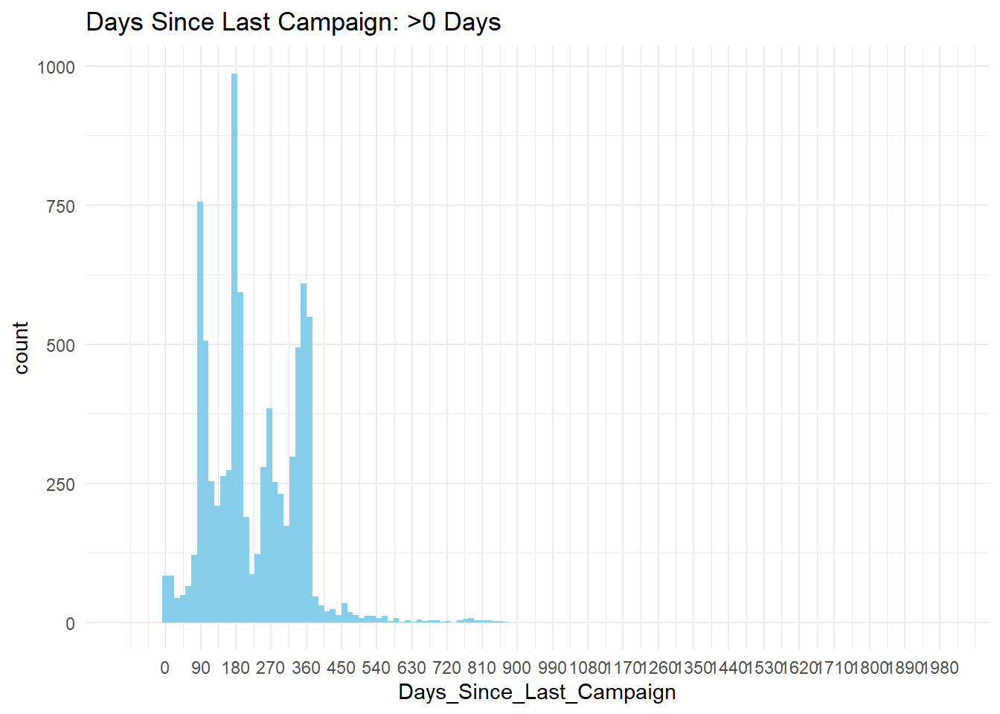

library(tidyverse)
library(ggplot2)
library(purrr)
library(knitr)
library(scales)
library(reshape2)
library(GGally)
df <- read_delim("https://raw.githubusercontent.com/AmandaSFox/DATA622/refs/heads/main/Assignment_1/bank-full.csv",
delim = ";",
quote = "\"")DATA_622_Project_1
1. EDA: Introduction
This assignment focuses on Exploratory Data Analysis (EDA), one of the most important steps in data science. Surveys show data scientists spend 60-80% of their time on data prep, and EDA helps identify data gaps, improve quality, and shape better features — all leading to better models.
The dataset comes from a study by Moro, Cortez, and Rita conducted between 2008 and 2013, where they analyzed telemarketing data from a Portuguese bank to predict the success of selling long-term deposits. The research team applied feature selection and modeling techniques, ultimately comparing logistic regression, decision trees, neural networks, and support vector machines to find the best predictive model.
For this EDA, I’m using a pre-processed version of that original dataset, which has a reduced number of features and shows evidence that it has been thoroughly cleaned, as we will see.
2. Dataset Overview
The dataset contains 45,211 records and 17 columns. There are no missing values and no duplicate records: as we go through this EDA exercise, it will become increasingly clear that this dataset has been thoroughly cleaned.
glimpse(df)Rows: 45,211
Columns: 17
$ age <dbl> 58, 44, 33, 47, 33, 35, 28, 42, 58, 43, 41, 29, 53, 58, 57, …
$ job <chr> "management", "technician", "entrepreneur", "blue-collar", "…
$ marital <chr> "married", "single", "married", "married", "single", "marrie…
$ education <chr> "tertiary", "secondary", "secondary", "unknown", "unknown", …
$ default <chr> "no", "no", "no", "no", "no", "no", "no", "yes", "no", "no",…
$ balance <dbl> 2143, 29, 2, 1506, 1, 231, 447, 2, 121, 593, 270, 390, 6, 71…
$ housing <chr> "yes", "yes", "yes", "yes", "no", "yes", "yes", "yes", "yes"…
$ loan <chr> "no", "no", "yes", "no", "no", "no", "yes", "no", "no", "no"…
$ contact <chr> "unknown", "unknown", "unknown", "unknown", "unknown", "unkn…
$ day <dbl> 5, 5, 5, 5, 5, 5, 5, 5, 5, 5, 5, 5, 5, 5, 5, 5, 5, 5, 5, 5, …
$ month <chr> "may", "may", "may", "may", "may", "may", "may", "may", "may…
$ duration <dbl> 261, 151, 76, 92, 198, 139, 217, 380, 50, 55, 222, 137, 517,…
$ campaign <dbl> 1, 1, 1, 1, 1, 1, 1, 1, 1, 1, 1, 1, 1, 1, 1, 1, 1, 1, 1, 1, …
$ pdays <dbl> -1, -1, -1, -1, -1, -1, -1, -1, -1, -1, -1, -1, -1, -1, -1, …
$ previous <dbl> 0, 0, 0, 0, 0, 0, 0, 0, 0, 0, 0, 0, 0, 0, 0, 0, 0, 0, 0, 0, …
$ poutcome <chr> "unknown", "unknown", "unknown", "unknown", "unknown", "unkn…
$ y <chr> "no", "no", "no", "no", "no", "no", "no", "no", "no", "no", …# missing data
colSums(is.na(df)) age job marital education default balance housing loan
0 0 0 0 0 0 0 0
contact day month duration campaign pdays previous poutcome
0 0 0 0 0 0 0 0
y
0 # duplicate records
nrow(df) - nrow(distinct(df))[1] 0The data consists of bank customers who were contacted as part of a marketing campaign and the features describe customer demographics, financial history, and characteristics of their interactions, as well as a label “y” which indicates whether they did choose the new deposit account.
Before doing further analysis, I reviewed the documentation and changed the column names to be more meaningful: I like to do this so that I can more clearly see how the data stacks up against my expectations and business knowledge.
df_final <- df %>%
set_names("Age","Occupation","Marital_Status","Education",
"In_Default","Avg_Balance","Housing_Loan","Personal_Loan",
"Contact_Type","Day","Month","Duration","Contacts_This_Campaign",
"Days_Since_Last_Campaign","Contacts_Before_This_Campaign",
"Previous_Outcome","Y")3. Exploring the Data
Now let’s get to know our population, starting with the categorical variables.
Simple frequency distributions were done to check for class imbalance. Overall, this data paints a picture of a financially stable, middle-class, working-age adult population which is typical of target customers for banking products like deposit accounts.
It should be noted here again that this data is extremely clean: just as there are no missing values, there are no clearly incorrect values (e.g. misspellings, upper/lower case issues, values appearing in the wrong columns/truncated/concatenated/etc.).
Regarding the target population:
1. Most target customers were employed: There were eight occupation categories comprising 89.4% of the population, with blue-collar (21.5%), management (20.9%), and technician (16.8%) being the most common categories. Only 10.0% of customers were not currently employed (retired, unemployed, student) and 0.6% were unknown.
2. Education varied in rough alignment with the occupations above: 29.4% had tertiary education, 51.3% secondary, 15.2% primary
3. Most were married (60.2%)
4. They were financially stable: 98.2% were not in default, 55.6% had housing loans and only 16% had personal loans.
Regarding the other categorical fields, the “previous outcome” field is interesting: 3.3% of previous interactions were deemed “successes,” which raises the question why they were called again. 81.7% were “unknown,” which seems to indicate this was their first interaction, and 4.1% “other,” so I do not believe this field is very meaningful.
Finally, our label (y): 11.4% of contacts were successful in selling the product, the goal of the marketing outreach and our label for supervised ML.
# categorical column list
cat_cols <- df_final %>%
select(where(is.character)) %>%
names()
for (col in cat_cols) {
df_final %>%
count(.data[[col]]) %>%
mutate(Pct = round((n / sum(n)) * 100, 1)) %>%
arrange(desc(Pct)) %>%
print()
}# A tibble: 12 × 3
Occupation n Pct
<chr> <int> <dbl>
1 blue-collar 9732 21.5
2 management 9458 20.9
3 technician 7597 16.8
4 admin. 5171 11.4
5 services 4154 9.2
6 retired 2264 5
7 self-employed 1579 3.5
8 entrepreneur 1487 3.3
9 unemployed 1303 2.9
10 housemaid 1240 2.7
11 student 938 2.1
12 unknown 288 0.6
# A tibble: 3 × 3
Marital_Status n Pct
<chr> <int> <dbl>
1 married 27214 60.2
2 single 12790 28.3
3 divorced 5207 11.5
# A tibble: 4 × 3
Education n Pct
<chr> <int> <dbl>
1 secondary 23202 51.3
2 tertiary 13301 29.4
3 primary 6851 15.2
4 unknown 1857 4.1
# A tibble: 2 × 3
In_Default n Pct
<chr> <int> <dbl>
1 no 44396 98.2
2 yes 815 1.8
# A tibble: 2 × 3
Housing_Loan n Pct
<chr> <int> <dbl>
1 yes 25130 55.6
2 no 20081 44.4
# A tibble: 2 × 3
Personal_Loan n Pct
<chr> <int> <dbl>
1 no 37967 84
2 yes 7244 16
# A tibble: 3 × 3
Contact_Type n Pct
<chr> <int> <dbl>
1 cellular 29285 64.8
2 unknown 13020 28.8
3 telephone 2906 6.4
# A tibble: 12 × 3
Month n Pct
<chr> <int> <dbl>
1 may 13766 30.4
2 jul 6895 15.3
3 aug 6247 13.8
4 jun 5341 11.8
5 nov 3970 8.8
6 apr 2932 6.5
7 feb 2649 5.9
8 jan 1403 3.1
9 oct 738 1.6
10 sep 579 1.3
11 mar 477 1.1
12 dec 214 0.5
# A tibble: 4 × 3
Previous_Outcome n Pct
<chr> <int> <dbl>
1 unknown 36959 81.7
2 failure 4901 10.8
3 other 1840 4.1
4 success 1511 3.3
# A tibble: 2 × 3
Y n Pct
<chr> <int> <dbl>
1 no 39922 88.3
2 yes 5289 11.7Next, we look at our numeric variables for central tendency, spread, and outliers.
To complete our demographic analysis, I first looked at Age, which shows a solid, mostly working-age adult population in alignment with a bank’s target customer base:
# numerical column list: removed "Day" as it is not a meaningful number
df_num <- df_final %>%
select(-Day) %>%
select(where(is.numeric))
# Age
summary(df_num$Age) Min. 1st Qu. Median Mean 3rd Qu. Max.
18.00 33.00 39.00 40.94 48.00 95.00 plot_age <- df_num %>%
ggplot(aes(Age))+
geom_histogram(bins = 30,fill="seagreen") +
scale_x_continuous(breaks = seq(0, 100, by = 5)) +
theme_minimal()
print(plot_age)
Another numeric column (Avg Balance) tells us more about their financial health. Note that most people owed very little with a few owing quite a lot: given the extreme right skew, the histogram below is zoomed in to balances below $5000.
Average annual balance: The median annual average balance owed was only $448, with a narrow IQR of $1,480. The max was realistic at $102,127, and there were some small negative balances owed, likely reflecting overpaid accounts.
These outliers and negative values will be left alone as they are realistic and meaningful.
summary(df_num$Avg_Balance) Min. 1st Qu. Median Mean 3rd Qu. Max.
-8019 72 448 1362 1428 102127 df_num %>%
ggplot(aes(x = Avg_Balance)) +
geom_histogram(bins = 1000, fill = "gray80") +
geom_vline(xintercept = 0, color="black", linetype = "dashed") +
coord_cartesian(c(-1000,8000)) +
scale_x_continuous(breaks = seq(-1000, 8000, by = 1000)) +
theme_minimal() +
labs(title = "Avg Annual Balance: Zoomed")
The remaining numeric variables describe the outreach itself:
1. Median call duration was 180 seconds, with the longest call = 4918 seconds or over an hour and 20 minutes long. The IQR was 216 seconds, with 50% of calls lasting between 103 and 319 seconds.
No negative numbers were found. The outliers will be left alone as they are realistic and meaningful.
2. Contacts before this campaign: This was the first campaign for a large majority of customers (81.9%). No negative or obviously incorrect values were found.
3. Contacts this campaign: The median # of contacts this campaign was two calls, with an IQR of two. The min was one call, which makes sense, but the max ranged up to 63: this seems unusual and could possibly be a data issue but we will leave these outliers alone for now.
4. Days since last campaign: This is the first potential problem in the data: the 81.7% of first-time outreach customers are denoted here as -1 days since last campaign, which will cause statistical and mathematical issues (see summary).
These -1 numeric values might be better changed to NA. Ignoring these for now, the histogram below shows values >0, which vary widely in a multimodal distribution with perhaps a quarterly pattern and a very long tail. I’m not clear on the value of this data, but we will leave it alone.
Note on other visuals not included: Box plots reflected the distributions and outliers noted above, so I did not include any here.
# Call Duration
summary(df_num$Duration) Min. 1st Qu. Median Mean 3rd Qu. Max.
0.0 103.0 180.0 258.2 319.0 4918.0 ggplot(df_num, aes(x = Duration)) +
geom_histogram(bins = 60, fill = "skyblue") +
theme_minimal() +
coord_cartesian(c(-100,2000)) +
scale_x_continuous(breaks = seq(0, 2000, by = 200)) +
labs(title = "Call Duration in Seconds: Zoomed")# Contacts Before This Campaign
summary(df_num$Contacts_Before_This_Campaign) Min. 1st Qu. Median Mean 3rd Qu. Max.
0.0000 0.0000 0.0000 0.5803 0.0000 275.0000 df_final %>%
count(Contacts_Before_This_Campaign) %>%
# mutate(Pct = round((n / sum(n)) * 100, 1))
mutate(
Contacts = ifelse(Contacts_Before_This_Campaign <= 5,
as.character(Contacts_Before_This_Campaign),
">5"),
Pct = round((n / sum(n)) * 100, 1)
) %>%
group_by(Contacts) %>%
summarise(n = sum(n), Pct = sum(Pct)) %>%
arrange(as.numeric(Contacts)) %>%
print(n = Inf) # Show all rows (helpful in case there's 0-9 and "Other")# A tibble: 7 × 3
Contacts n Pct
<chr> <int> <dbl>
1 0 36954 81.7
2 1 2772 6.1
3 2 2106 4.7
4 3 1142 2.5
5 4 714 1.6
6 5 459 1
7 >5 1064 2 # Contacts This Campaign
summary(df_num$Contacts_This_Campaign) Min. 1st Qu. Median Mean 3rd Qu. Max.
1.000 1.000 2.000 2.764 3.000 63.000 df_final %>%
count(Contacts_This_Campaign) %>%
# mutate(Pct = round((n / sum(n)) * 100, 1))
mutate(
Contacts = ifelse(Contacts_This_Campaign <= 9,
as.character(Contacts_This_Campaign),
">9"),
Pct = round((n / sum(n)) * 100, 1)
) %>%
group_by(Contacts) %>%
summarise(n = sum(n), Pct = sum(Pct)) %>%
arrange(as.numeric(Contacts)) %>%
print(n = Inf) # Show all rows (helpful in case there's 0-9 and "Other")# A tibble: 10 × 3
Contacts n Pct
<chr> <int> <dbl>
1 1 17544 38.8
2 2 12505 27.7
3 3 5521 12.2
4 4 3522 7.8
5 5 1764 3.9
6 6 1291 2.9
7 7 735 1.6
8 8 540 1.2
9 9 327 0.7
10 >9 1462 2.9# Days Since Last Campaign
summary(df_num$Days_Since_Last_Campaign) Min. 1st Qu. Median Mean 3rd Qu. Max.
-1.0 -1.0 -1.0 40.2 -1.0 871.0 df_final %>%
count(Days_Since_Last_Campaign) %>%
# mutate(Pct = round((n / sum(n)) * 100, 1))
mutate(
Days = ifelse(Days_Since_Last_Campaign <= 5,
as.character(Days_Since_Last_Campaign),
">5"),
Pct = round((n / sum(n)) * 100, 1)
) %>%
group_by(Days) %>%
summarise(n = sum(n), Pct = sum(Pct)) %>%
arrange(as.numeric(Days)) %>%
print()# A tibble: 7 × 3
Days n Pct
<chr> <int> <dbl>
1 -1 36954 81.7
2 1 15 0
3 2 37 0.1
4 3 1 0
5 4 2 0
6 5 11 0
7 >5 8191 14.4df_days_gt_0 <- df_num %>%
select(Days_Since_Last_Campaign) %>%
filter(Days_Since_Last_Campaign > 0)
ggplot(df_days_gt_0, aes(x = Days_Since_Last_Campaign)) +
geom_histogram(bins = 60, fill = "skyblue") +
theme_minimal() +
coord_cartesian(c(-100,2000)) +
scale_x_continuous(breaks = seq(0, 2000, by = 90)) +
labs(title = "Days Since Last Campaign: >0 Days")
4. Relationships Between Variables
4.1 Numeric vs Numeric - Correlation Analysis
A correlation matrix was computed to identify relationships between numeric features.
No significant correlations were found, in fact, all pairs had correlation coefficients (absolute value) less than 0.1 except for one: “contacts before this campaign” and “days since last campaign” had a correlation coefficient of 0.45. This is still low but it makes sense that there is some correlation because over 80% of people contacted had had zero contacts before this campaign and therefore had a value of -1 days since last campaign.
The lack of correlation between columns is more evidence that this dataset was thoroughly pre-processed.
cor_matrix <- df_num %>%
cor(use = "pairwise.complete.obs")
# table of pairs with coefficients
cor_df <- as.data.frame(as.table(cor_matrix)) %>%
filter(Var1 != Var2) %>%
filter(abs(Freq) > 0.1) %>%
arrange(desc(abs(Freq)))
cor_df Var1 Var2 Freq
1 Contacts_Before_This_Campaign Days_Since_Last_Campaign 0.4548196
2 Days_Since_Last_Campaign Contacts_Before_This_Campaign 0.4548196# plot
melt_cor <- melt(cor_matrix)
ggplot(melt_cor, aes(Var1, Var2, fill = value)) +
geom_tile(color = "white") +
scale_fill_gradient2(low = "blue", high = "red", mid = "white",
midpoint = 0, limit = c(-1,1), space = "Lab",
name="Correlation") +
theme_minimal() +
theme(axis.text.x = element_text(angle = 45, vjust = 1, hjust = 1)) +
coord_fixed()Other visuals not included here: I tried scatterplots and ggally in case there were non-linear correlation patterns, but they showed nothing of interest.
4.2 Numeric vs Categorical - Boxplots
Boxplots were used to review how numeric features (e.g., age, balance, duration) vary across categorical groups like job, education, and marital.
None of the relationships were unexpected, and many were not meaningful at all (month vs. age, for example). However, a few interesting/intuitive pairs are included below as examples.


num_cols <- df_num %>%
names()
for (cat in cat_cols) {
for (num in num_cols) {
p <- ggplot(df_final,
aes(x = .data[[cat]],
y = .data[[num]])) +
geom_boxplot(outlier.color = "red", outlier.shape = 1) +
theme_minimal() +
theme(axis.text.x = element_text(angle = 45, hjust = 1)) +
labs(title = paste(num, "by", cat))
print(p)
}
}4.3 Categorical vs Categorical - Stacked Bar Charts
Relationships between categorical variables were visualized using stacked bar charts.
As above, some pairs were not meaningful e.g. month and occupation: below is a sample of some of the more interesting relationships, followed by the code for all pairs.


if (length(cat_cols) > 1) {
for (i in 1:(length(cat_cols) - 1)) {
for (j in (i + 1):length(cat_cols)) {
cat1 <- cat_cols[i]
cat2 <- cat_cols[j]
p <- ggplot(df_final,
aes(x = .data[[cat1]],
fill = .data[[cat2]])) +
geom_bar(position = "fill") +
scale_y_continuous(labels = scales::label_percent()) +
labs(title = paste("Proportion of", cat2, "within", cat1),
y = "Proportion") +
theme_minimal() +
theme(axis.text.x = element_text(angle = 45, hjust = 1))
print(p)
}
}
}EDA Conclusions:
The data aligns with expectations for a financial marketing campaign and is a good-sized sample with no missing values, duplicates, or data quality issues.
Numeric variables are all independent. Class imbalance is seen in several columns including the label (see below).
The data is clean and nearly ready for modeling, with two issues of note:
1. Negative numbers in Days since last campaign: The 81.7% of first-time outreach customers are denoted here as -1 days since last campaign, which will cause issues in math. Recommend changing to NA.
2. Class imbalance: Categorical variables exhibit some class imbalance, particularly the y variable (11.4% yes). This is typical for marketing type data but may require consideration in model training.
Other variables with imbalance include “default” (98.2% = no) as well as the related fields “contacts before this campaign” (81.7% = 0) and “days since last contact” (81.7% = -1). These may of be less significance.
Model Recommendations
This is a binary classification problem with a defined target variable in the dataset (y), so this is a supervised machine learning problem. There are over 45,000 records and 16 variables excluding the label, including a mix of numeric and categorical features. Most of the numerical features have a lot of skew, so models that assume a normal distribution will be impacted.
The business will likely want to balance interpretability and accuracy: I would recommend maximizing precision to minimize the number of low-probability calls they make because telemarketing is expensive and the success rate is low. Right now for example, they seem to be calling the same customers over and over in some cases; it would be important to know if this helps or hurts their success rate.
However, interpretability may be wanted by marketing leadership to better understand why customers say yes vs. no, to help target future campaigns and refine messaging for example.
Based on the above, the most suitable algorithms would typically be logistic regression or tree-based models. Logistic regression is fast and highly interpretable and accessible to business users. It does assume linear relationships but is a good first pass here. Tree models quickly find the best splits between yes/no customers, handle both categorical and numeric variables, but are less interpretable for business users.
Within the models covered in class, none is really recommended: KNN is impractical due to computational expense and lack of interpretability. Discriminant models LDA and QDA both assume normal distributions and in the case of LDA, equal covariance. Naive Bayes assumes categorical features are independent, which the bar charts above demonstrate that they are not, and does not handle skewed numerical variables.
Recommended: Tree-based models, logistic regression Not Recommended: KNN, LDA, QDA, Naive Bayes
Pre-processing
As shown previously, this dataset was thoroughly pre-processed. No missing values, duplicates, or errors were found. Outliers were identified but retained as reasonable and meaningful. Business context was applied to evaluating the data and no unusual patterns were found. The features provided were appropriate for modeling.
I made two improvements to the data: 1. Replaced -1 with NA in “Days Since Last Campaign” to more accurately identify first time contacts and avoid math issues 2. Created two new customer segmentation features to combine related features (occupation/education, borrowing profile) and simplify modeling
# Replace -1 with NA
df_preprocessed <- df_final %>%
mutate(Days_Since_Last_Campaign =
ifelse(Days_Since_Last_Campaign == -1,
NA,
Days_Since_Last_Campaign))
# Check result
df_final %>%
count(Days_Since_Last_Campaign) %>%
mutate(
Days = ifelse(Days_Since_Last_Campaign <= 5,
as.character(Days_Since_Last_Campaign),
">5"),
Pct = round((n / sum(n)) * 100, 1)
) %>%
group_by(Days) %>%
summarise(n = sum(n), Pct = sum(Pct)) %>%
arrange(as.numeric(Days)) %>%
print()Warning: There was 1 warning in `arrange()`.
ℹ In argument: `..1 = as.numeric(Days)`.
Caused by warning:
! NAs introduced by coercion# A tibble: 7 × 3
Days n Pct
<chr> <int> <dbl>
1 -1 36954 81.7
2 1 15 0
3 2 37 0.1
4 3 1 0
5 4 2 0
6 5 11 0
7 >5 8191 14.4df_preprocessed %>%
count(Days_Since_Last_Campaign) %>%
mutate(
Days = ifelse(Days_Since_Last_Campaign <= 5,
as.character(Days_Since_Last_Campaign),
">5"),
Pct = round((n / sum(n)) * 100, 1)
) %>%
group_by(Days) %>%
summarise(n = sum(n), Pct = sum(Pct)) %>%
arrange(as.numeric(Days)) %>%
print()Warning: There was 1 warning in `arrange()`.
ℹ In argument: `..1 = as.numeric(Days)`.
Caused by warning:
! NAs introduced by coercion# A tibble: 7 × 3
Days n Pct
<chr> <int> <dbl>
1 1 15 0
2 2 37 0.1
3 3 1 0
4 4 2 0
5 5 11 0
6 >5 8191 14.4
7 <NA> 36954 81.7# occupation/education profile feature
df_preprocessed <- df_preprocessed %>%
mutate(Occupation_Education = paste(Occupation, Education, sep = "_"))
df_preprocessed %>%
count(Occupation_Education, sort = TRUE) %>%
mutate(Pct = round((n / sum(n)) * 100, 1))# A tibble: 48 × 3
Occupation_Education n Pct
<chr> <int> <dbl>
1 management_tertiary 7801 17.3
2 blue-collar_secondary 5371 11.9
3 technician_secondary 5229 11.6
4 admin._secondary 4219 9.3
5 blue-collar_primary 3758 8.3
6 services_secondary 3457 7.6
7 technician_tertiary 1968 4.4
8 management_secondary 1121 2.5
9 retired_secondary 984 2.2
10 self-employed_tertiary 833 1.8
# ℹ 38 more rows# loan profile feature: default, housing, personal loans
df_preprocessed <- df_preprocessed %>%
mutate(Loan_Profile = case_when(
Housing_Loan == "yes" & Personal_Loan == "yes" & In_Default == "yes" ~ "Both Loans - In Default",
Housing_Loan == "yes" & Personal_Loan == "yes" & In_Default == "no" ~ "Both Loans - No Default",
Housing_Loan == "yes" & Personal_Loan == "no" & In_Default == "yes" ~ "Housing Loan - In Default",
Housing_Loan == "yes" & Personal_Loan == "no" & In_Default == "no" ~ "Housing Loan - No Default",
Housing_Loan == "no" & Personal_Loan == "yes" & In_Default == "yes" ~ "Personal Loan - In Default",
Housing_Loan == "no" & Personal_Loan == "yes" & In_Default == "no" ~ "Personal Loan - No Default",
Housing_Loan == "no" & Personal_Loan == "no" & In_Default == "yes" ~ "No Loans - In Default",
TRUE ~ "No Loans - No Default"
))
# Check result - top combinations
df_preprocessed %>%
count(Loan_Profile, sort = TRUE) %>%
mutate(Pct = round((n / sum(n)) * 100, 1))# A tibble: 8 × 3
Loan_Profile n Pct
<chr> <int> <dbl>
1 Housing Loan - No Default 20461 45.3
2 No Loans - No Default 16992 37.6
3 Both Loans - No Default 4234 9.4
4 Personal Loan - No Default 2709 6
5 Housing Loan - In Default 302 0.7
6 No Loans - In Default 212 0.5
7 Personal Loan - In Default 168 0.4
8 Both Loans - In Default 133 0.3Works Cited
ChatGPT. “ChatGPT.” Chatgpt.com, 2024, chatgpt.com. Accessed Feb. 2025.
R coding assistance.
Moro, Sérgio et al. “A data-driven approach to predict the success of bank telemarketing.” Decis. Support Syst. 62 (2014): 22-31.
Moro, S., P. Rita, and P. Cortez. “Bank Marketing.” UCI Machine Learning Repository, 2014, https://doi.org/10.24432/C5K306. Accessed Feb. 2025.